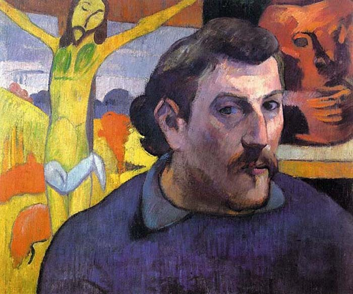

달과 6펜스 -윌리엄 서머싯 몸

나는 무얼 위해 사는가? 무엇이 당신의 삶이 가치있다고 말해주는가? 이 질문들에 대한 답은 아마 사람마다 제각각 다 다를 것이다. 누군가에게는 친구와 연인, 누군가에게는 신, 누군가에게는 자신의 명예가 자신의 삶을 가치있게 해주는 무언가일 것이다. 그리고 누군가는 예술이 자신의 삶의 가치이며 전부라고 말할 것이다.
“나는 그림을 그려야 한다지 않소. 그리지 않고서는 못 배기겠단 말이오.물에 빠진 사람에게 헤엄을 잘 치고 못 치고가 문제겠소? 우선 헤어나오는 게 중요하지. 그렇지 않으면 빠져 죽어요."
-윌리엄 서머싯 몸, [달과 6펜스]-
사십 대의 런던의 증권 중개인 찰스 스트릭랜드는 도저히 참을 수 없는 한계에 와 있었다. 그림을 그려야 겠다는, 그의 마음속에서의 들끓고 있는 어떤 격렬한 힘이 그를 사로잡았다. 그는 돌연 모든 것을 포기하고 가족을 내팽개친 채 파리 뒷골목으로 가 그림을 그리기 시작했다. 그림을 그린다는 것이 스스로보다 더 중요했던 그이기에 남들의 시선은 아무런 문제가 되지 않았다. 태평양 한가운데의 섬 타히티에 찾아가 홀로 지내던 그는 나병에 걸려 시력을 잃은 채 그림을 그리다 죽는다. 스트릭랜드 죽고 난 4년후 그가 세상에 알려지며 그는 누구도 의심하지 않는 천재로 기억되었다.
나는 예술은 그 자체로 하나의 언어라고 생각한다. 말과 우리의 언어로써 완전히 전달되지 못하는 감정, 느낌, 아름다움은 예술의 영역 안에서 화가의 붓으로, 피아노 건반 위의 손가락으로, 극작가의 펜 끝으로 우리에게 전해진다. 그렇기에 예술은 어렵다. 만드는 것도 그것을 알아보는 것도 어렵다. 그러나 스트릭랜드가 죽고 난 이후 사람들이 그의 그림을 알아보았듯, 예술은 시간과 공간의 한계를 뛰어넘는 무언가를 전해준다.
스트릭랜드는 예술을 위해 살았다. 자신을 괴롭게 하는 환상속에서 허우적거리며 그것들을 세상으로 쏟아내려 했다. 결국 그는 외딴 섬의 숲속에서 눈이 먼 채 온 방을 그림으로 뒤덮으며 진정한 걸작을 완성시킨 채 죽었다. 그리고는 자신이 죽은 뒤에 자신의 집을 불태워달라고 부탁했다. 자신의 마지막 걸작을 본 사람이 한명밖에 없다고 해도 그는 상관없었다. 그는 끝내 자신이 추구하던 무언가를 이뤄내었기 때문이다.
이 책의 제목인 달과 6펜스는 서로 비슷하게 생겼다. 둘다 둥글고, 은빛으로 빛난다. 하지만 둘은 다르다. 6펜스는 손에 움켜쥘 수 있지만 달은 바라만 볼뿐 만질수도 없다. 예술의 범주에서 자신을 무언가에 쏟아내는 것은 달을 쫓는 것처럼 닿을수 없는 곳을 향해 다가가는 일일 것이다. 누군가가 주머니 속의 6펜스를 만지작거릴때 누군가는 결코 닿을 수 없는 달을 향해 사다리를 뻗고 있었다. 서머싯 몸은 인상주의 화가 폴 고갱의 일생을 스트릭랜드의 모델로 삼았다. 나는 어쩌면 고갱의 그림에 은은히 비치는 달빛을 서머싯 몸이 보았던 것이 아닐까, 추측해본다.